You vs BO · Static presentation fallback
You vs Bayesian Optimisation
Static fallback · presentation-v1 · five guesses each
Human inputs: 0.25, 0.6, 0.72, 0.82, 0.96. This is one illustrative match, not a performance benchmark.
Full example match record
1. Three observations. Where would you look next?
Both players start here. The human sees only these values; BO has the same data.
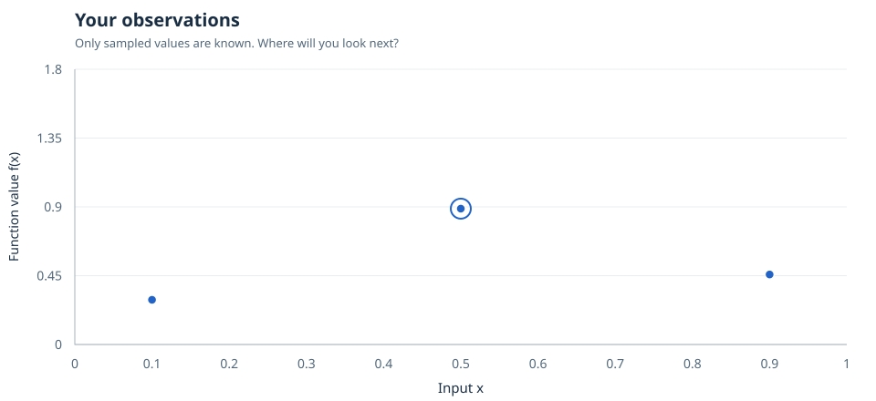
2. Human guess 1: x = 0.25
One evaluation each. BO’s location and result remain hidden.
3. Human guess 2: x = 0.6
One evaluation each. BO’s location and result remain hidden.
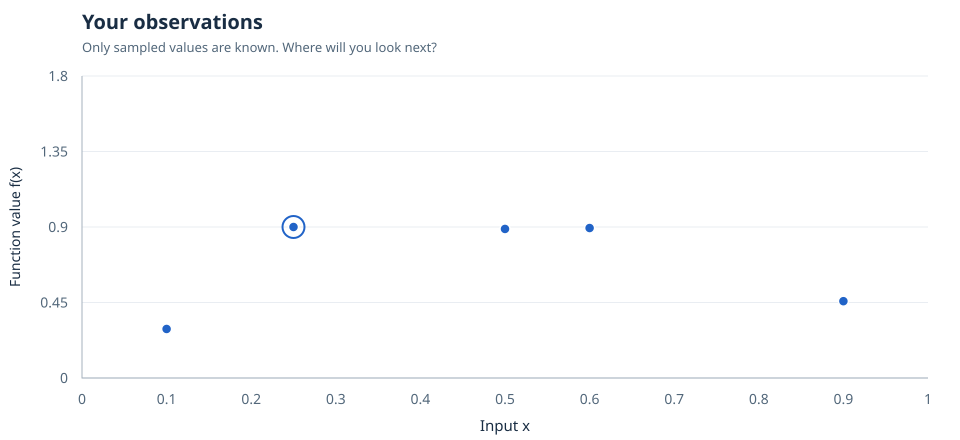
4. Human guess 3: x = 0.72
One evaluation each. BO’s location and result remain hidden.
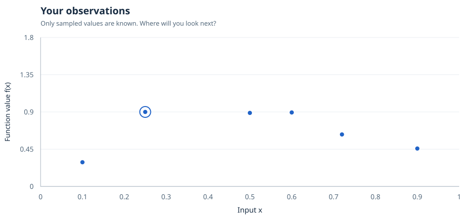
5. Human guess 4: x = 0.82
One evaluation each. BO’s location and result remain hidden.
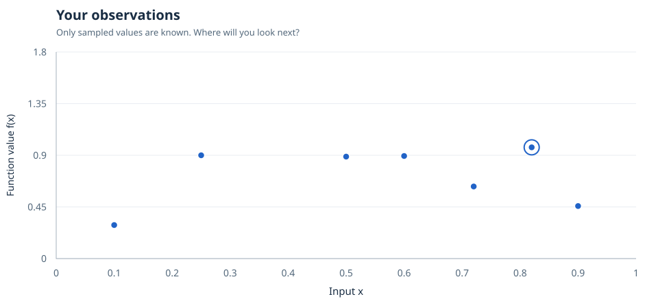
6. Human guess 5: x = 0.96
One evaluation each. BO’s location and result remain hidden.
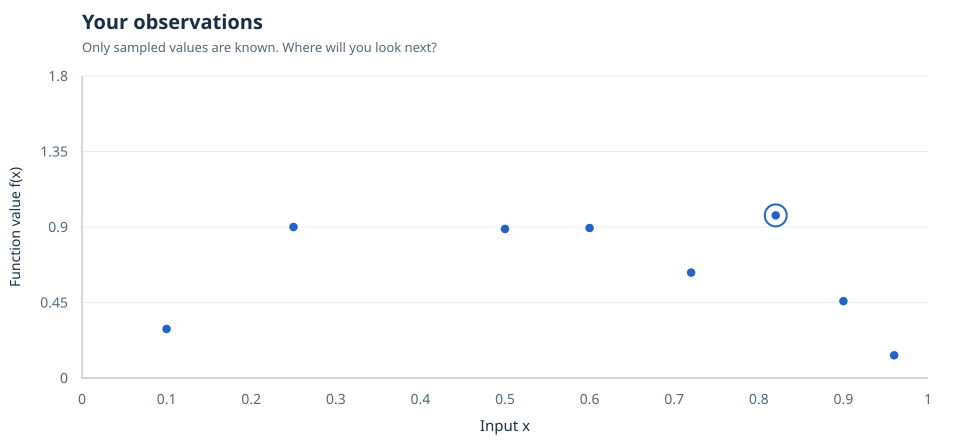
7. The reveal
Human best: 0.969281392107. BO best: 0.888404999997. Winner: human. Eight evaluations each.
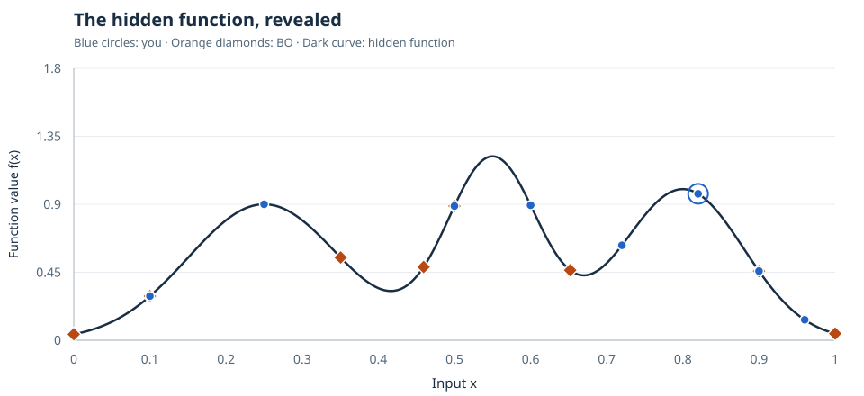
8. BO turn 1: the decision
EI proposes x = 0.652. Ask what BO knows before revealing the value.
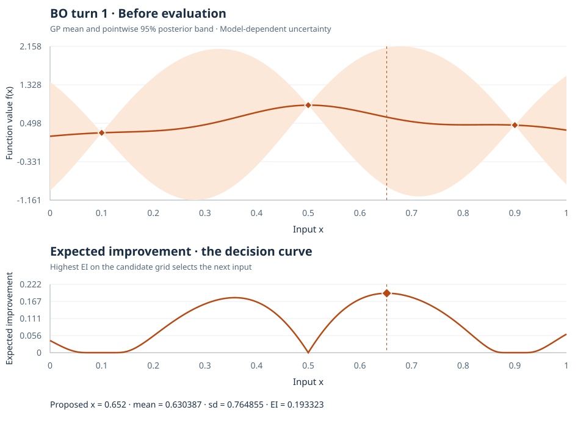
9. BO turn 1: the observation
Observed f(0.652) = 0.463814. The posterior updates; the EI curve records the original decision.
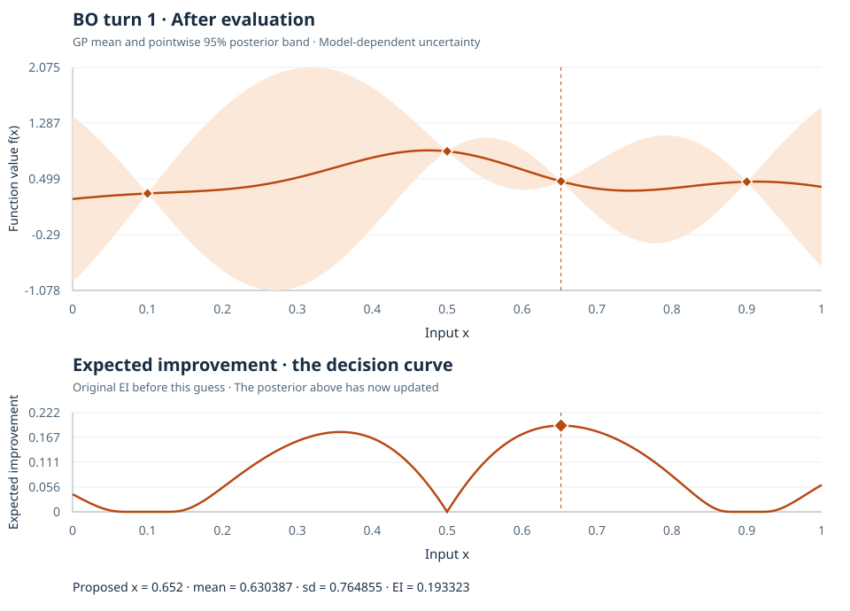
10. BO turn 2: the decision
EI proposes x = 0.3505. Ask what BO knows before revealing the value.
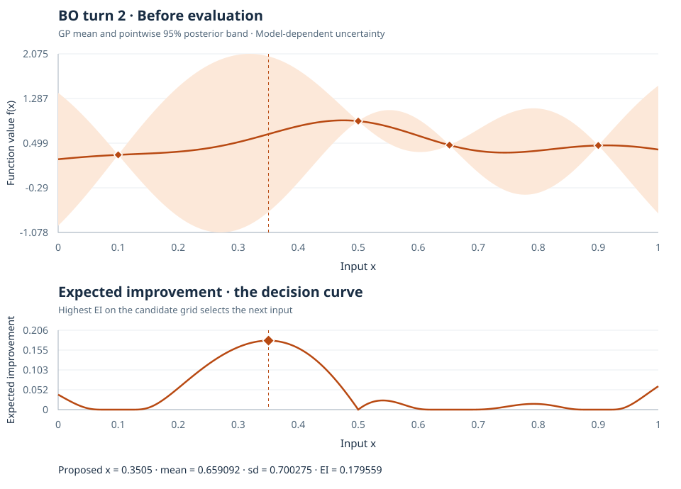
11. BO turn 2: the observation
Observed f(0.3505) = 0.547918. The posterior updates; the EI curve records the original decision.
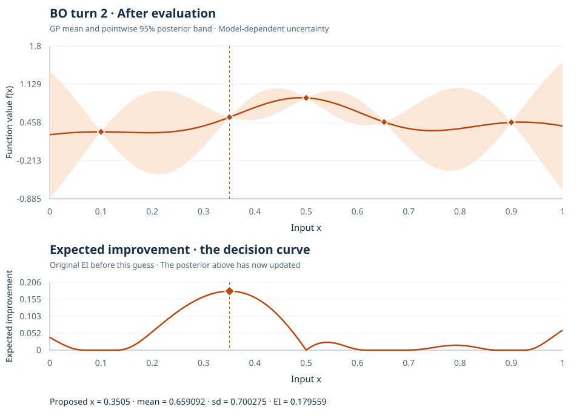
12. BO turn 3: the decision
EI proposes x = 1. Ask what BO knows before revealing the value.
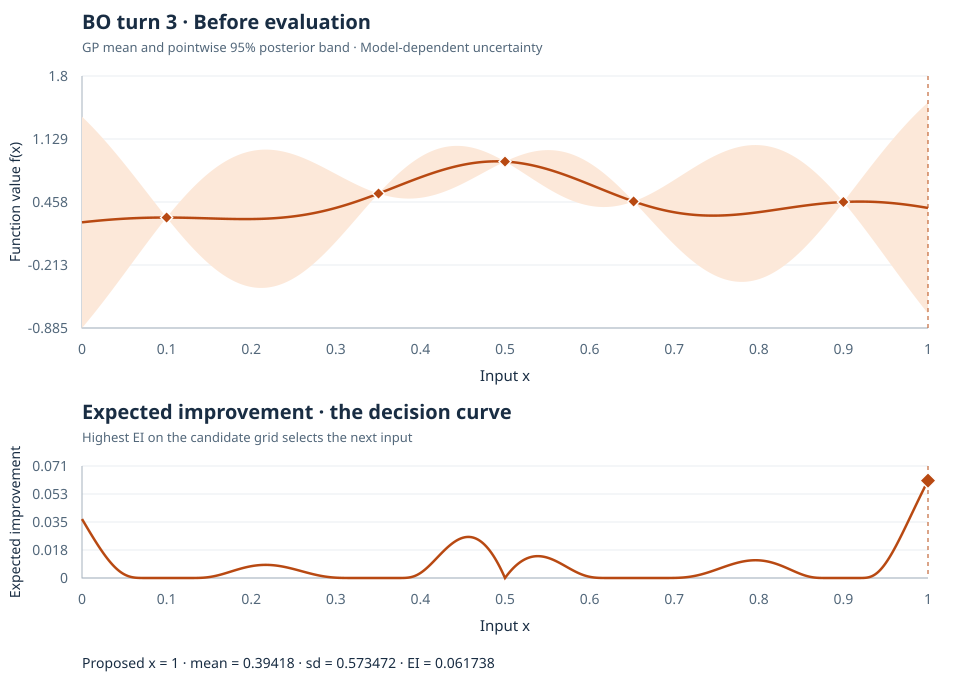
13. BO turn 3: the observation
Observed f(1) = 0.043937. The posterior updates; the EI curve records the original decision.
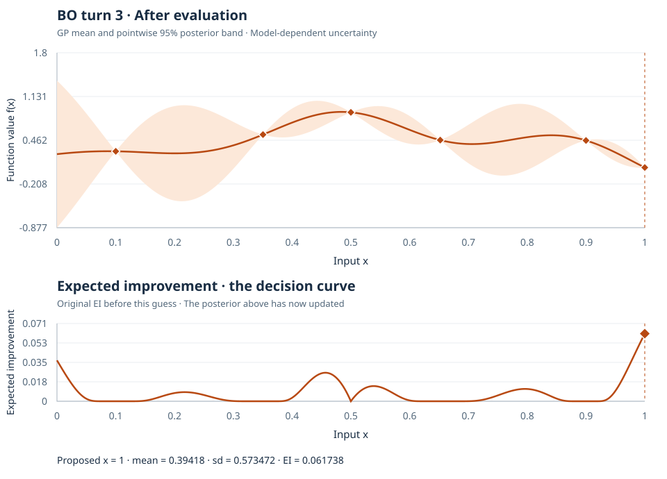
14. BO turn 4: the decision
EI proposes x = 0. Ask what BO knows before revealing the value.
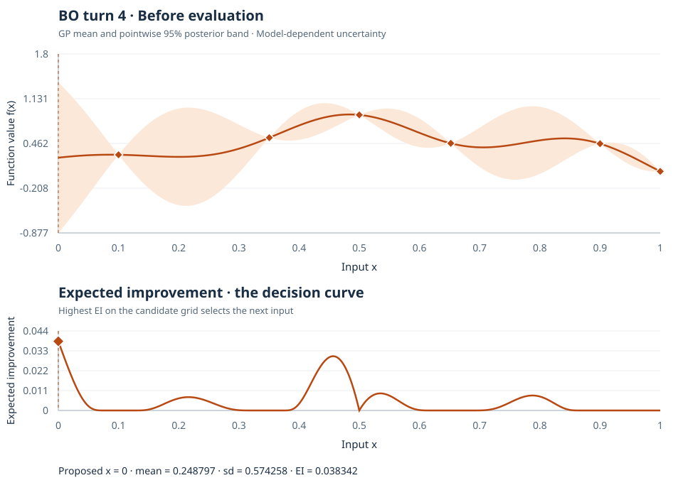
15. BO turn 4: the observation
Observed f(0) = 0.039543. The posterior updates; the EI curve records the original decision.
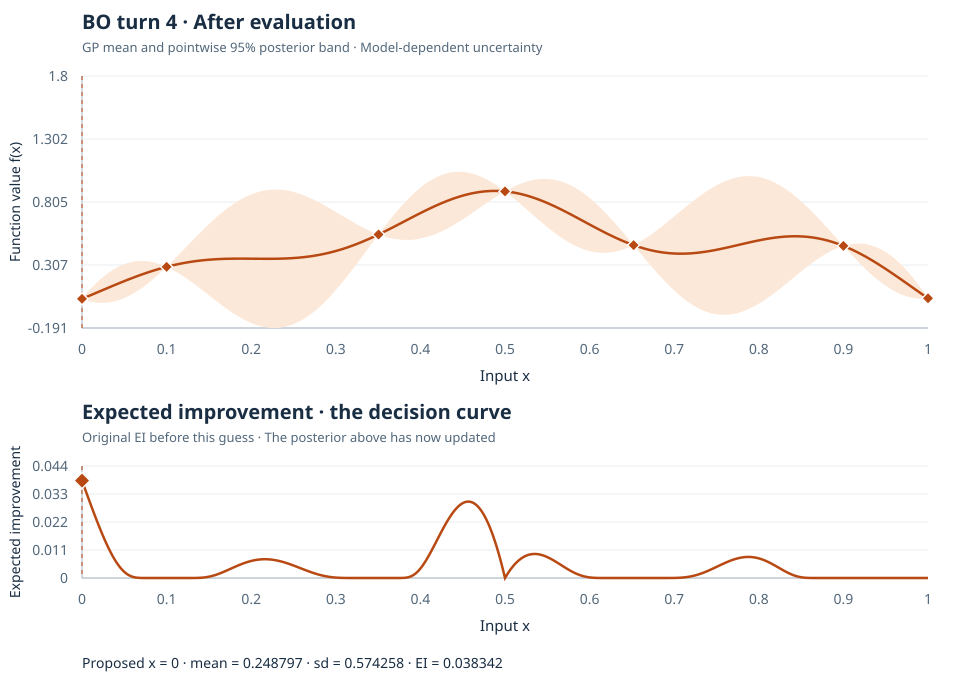
16. BO turn 5: the decision
EI proposes x = 0.4595. Ask what BO knows before revealing the value.
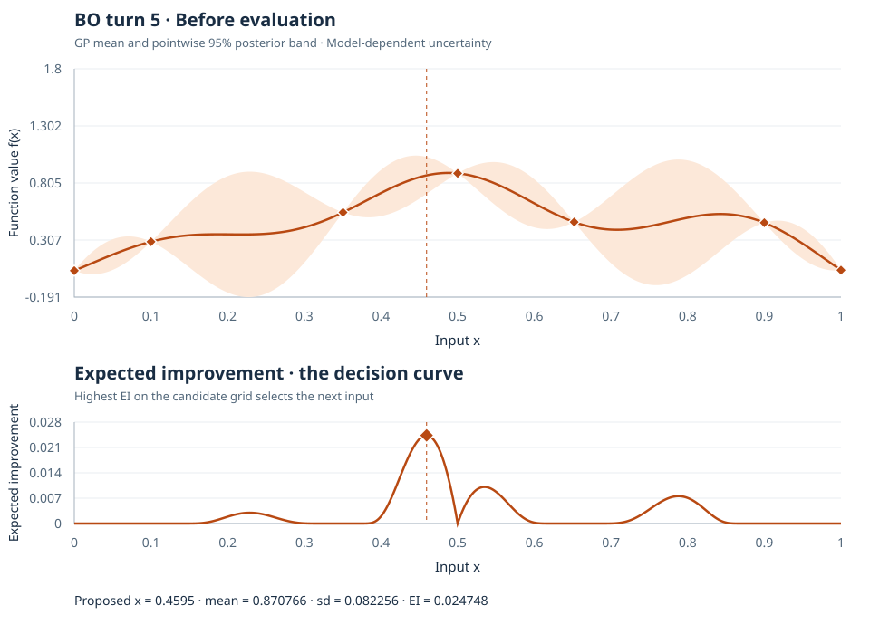
17. BO turn 5: the observation
Observed f(0.4595) = 0.485118. The posterior updates; the EI curve records the original decision.
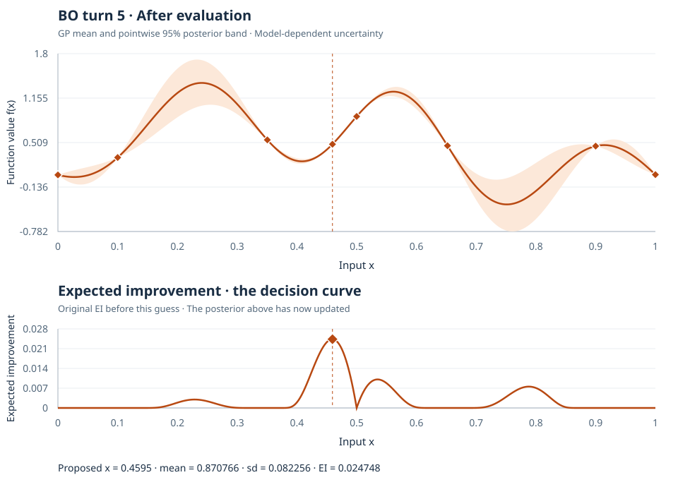